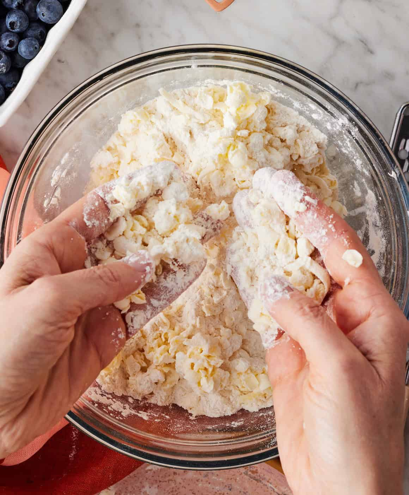
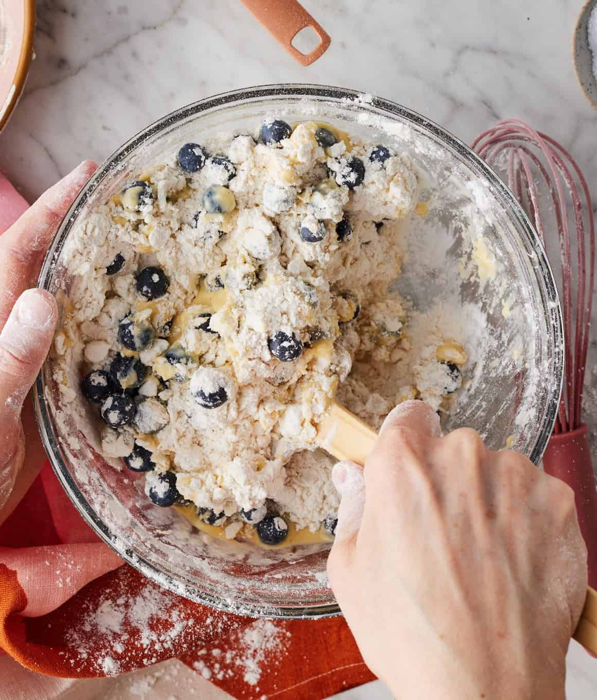
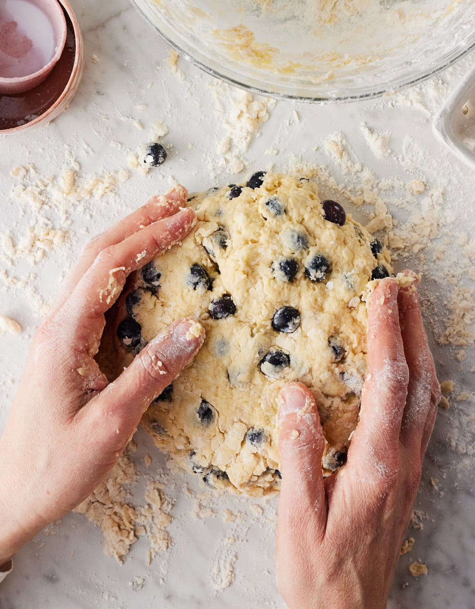
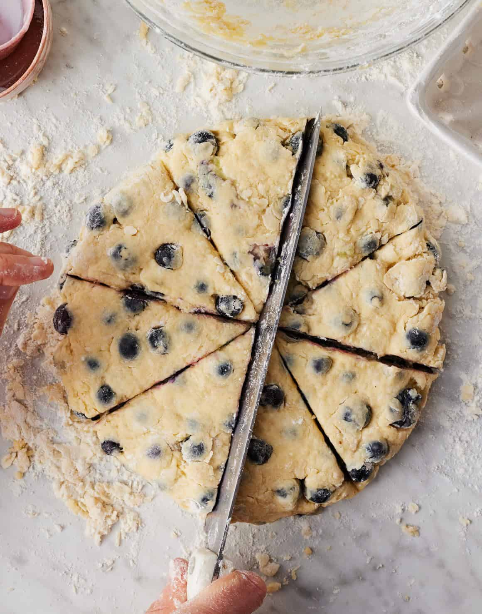
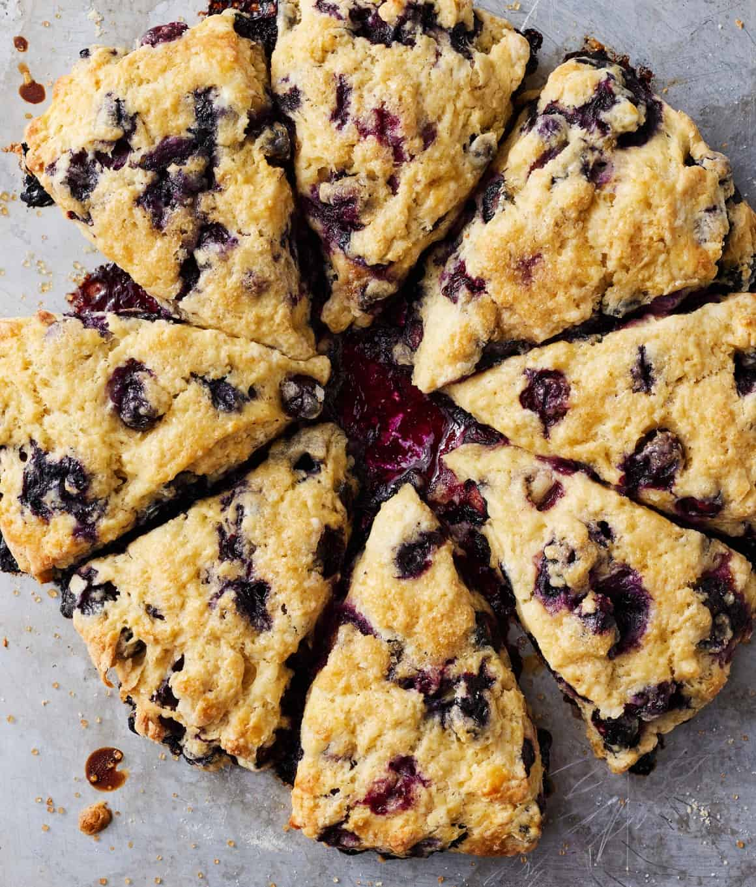
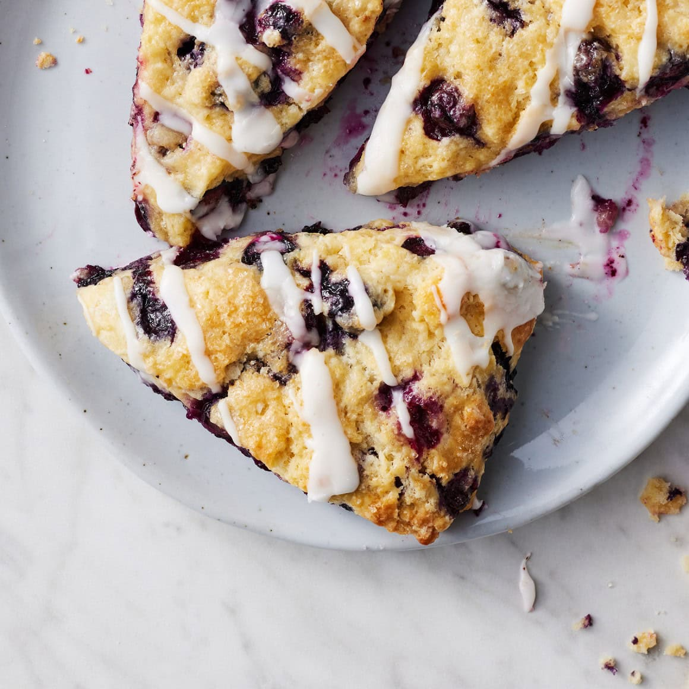

Directions:
- Line a large baking sheet with parchment paper.
- In a large bowl, whisk together the flour, sugar, baking powder, and salt.

3. On the large holes of a box grater, grate the frozen butter. Add to the flour mixture and toss to coat. Use your hands to work the butter into the flour until the mixture resembles a coarse meal. Add desired mix-ins and toss to incorporate.

4. In a medium bowl, whisk together the buttermilk, egg, and vanilla, if using. Pour over the flour mixture and use a spatula to mix until a shaggy dough forms. Knead with your hands to incorporate any remaining dry flour. The dough should feel soft but not sticky. If it is sticky, work in a bit more flour. If it is dry, drizzle in a little more buttermilk. Form the dough into a ball.

5. Transfer the dough ball to a lightly floured surface and form it into a 7- to 8-inch disk about 1 inch thick.

6. Slice into 8 equal wedges and transfer to the prepared baking sheet, leaving a little space around each scone.
7. Freeze the scones for 15 minutes. Meanwhile, preheat the oven to 400°F.
8. Remove the scones from the freezer and brush with buttermilk. Sprinkle with coarse sugar, if using. Bake for 18 to 27 minutes, or until golden brown on top.

9. Transfer to a wire rack to cool.

10. Enjoy!
* Note: Mix-ins such as fresh raspberries or diced fresh strawberries will add moisture to the scone dough. If using these, start by adding just ⅓ cup buttermilk to the dough. Add more as needed, 1 tablespoon at a time, until the dough comes together. You will likely need less than ½ cup total due to the extra moisture from the fruit.

 SERVES: 8
SERVES: 8  TIME: 1 hr
TIME: 1 hr